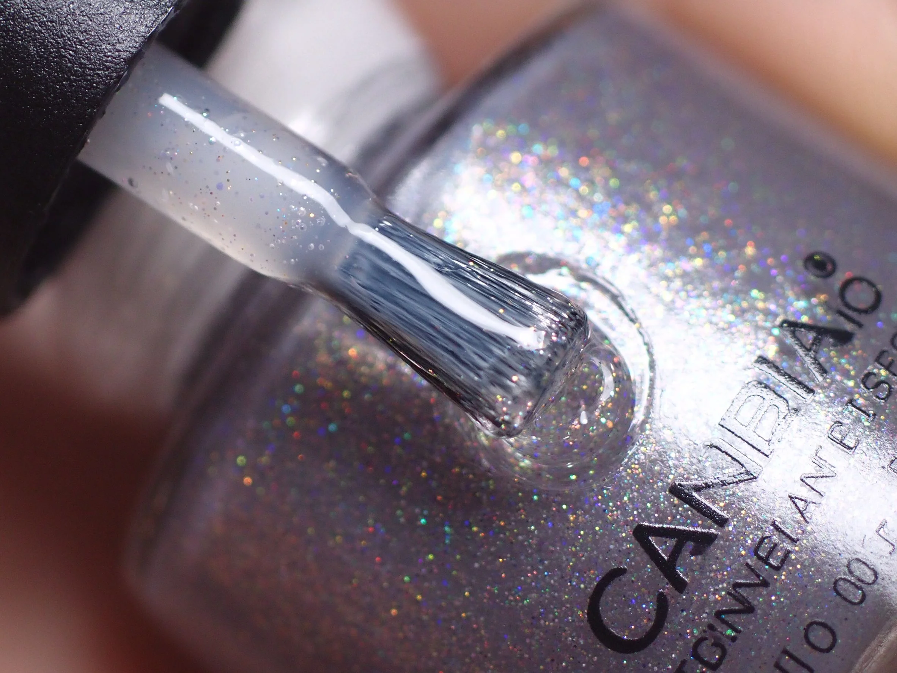

美甲可剝底膠是什麼？入門入門攻略
可剝底膠是給想常換色的人一個温柔的卸甲方式——整片撕下來，不傷真甲。
可剝底膠原理與辨識重點：美甲師不說的撕開就卸
有人做了凝膠嫌卸麻煩，又不敢硬摳；可剝底膠就是為這種人發明的。它是一種特殊底膠，固化後會在甲面形成一層『可整片撕起』的薄膜。上面照樣上你愛的色膠和封層，要換的時候，從邊緣摳起一整片剝下，不用泡卸甲水。代價是——它黏得沒一般底膠牢，撐不久。
誰適合做可剝底膠？想常常換色對號入座
喜歡一兩週換一次色、不想跑沙龍卸甲、或怕傷甲的人；學生、辦公室換款族最愛。
可剝底膠美甲施作步驟：可剝式底膠
甲面去油 → 薄上可剝底膠（記得別碰到甘皮，不然會翹得快）→ 照燈 → 正常上色膠、封層。要卸時從一角輕掀，整片慢慢撕。
可剝底膠優缺點分析：美甲持久度與傷甲評估
| 優點 | 說明 |
|---|---|
| 免泡卸水、撕卸快速，對真甲最溫和，換色成本低。 | 是韓系流派的招牌，入門就能上手 |
| 缺點 | 說明 |
| 持久度明顯短，通常一週多就可能鬆動，不能當長期款。 | 前置與別一邊洗澡做家事一邊指望它撐一個月。它本來就是『短期換色』用的，硬留會自己翹、藏水。沒顧好會打折 |

可剝底膠新手雷區：不能久留與常見錯誤
注意：別一邊洗澡做家事一邊指望它撐一個月。它本來就是『短期換色』用的，硬留會自己翹、藏水。
可剝底膠和其他美甲做法的差別比較
跟假性凝膠（peel-gel）很像，但差別在：可剝底膠只換掉底層、上面照樣用正常色膠；假性凝膠是連色膠都用可剝系統。
可剝底膠美甲常見問題 FAQ
Q：撕下來會傷甲嗎？ A：正確整片慢慢撕還好，但如果它已經自己翹了再硬撕，還是會帶走一層甲面。
Q：可以撐多久？ A：大約 5–10 天，看保養；想撐兩週以上就不建議用它。